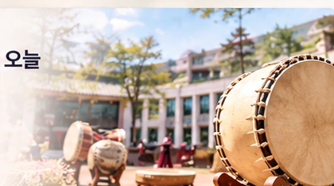
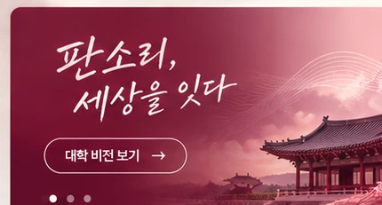

PANSORI UNIVERSITY

CAMPUS LIFE
판소리대학교의 오늘
전통과 현대가 어우러진
예술과 감성의 캠퍼스
NOTICE & NEWS
더보기 ＋대학 소식

PANSORI UNIVERSITY
대학소개
전통을 잇고 새로운 미래를 열어갑니다.

전통과 현대가 어우러진
예술과 감성의 캠퍼스

PANSORI UNIVERSITY
전통을 잇고 새로운 미래를 열어갑니다.
PANSORI UNIVERSITY